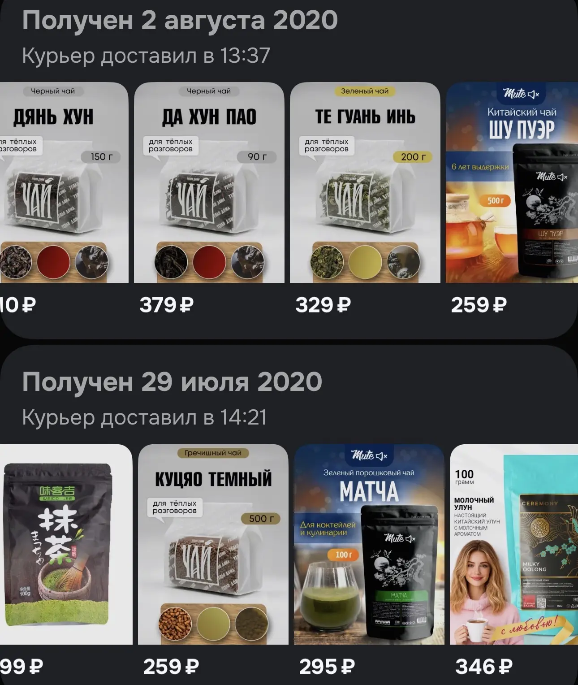
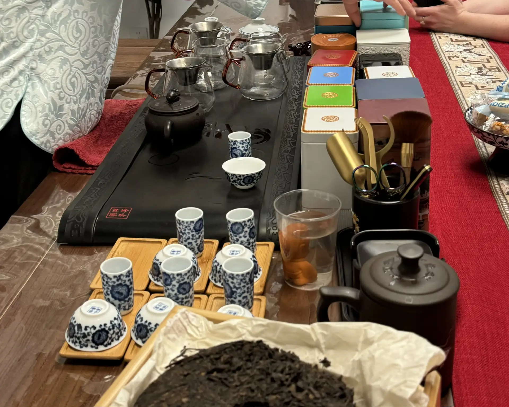
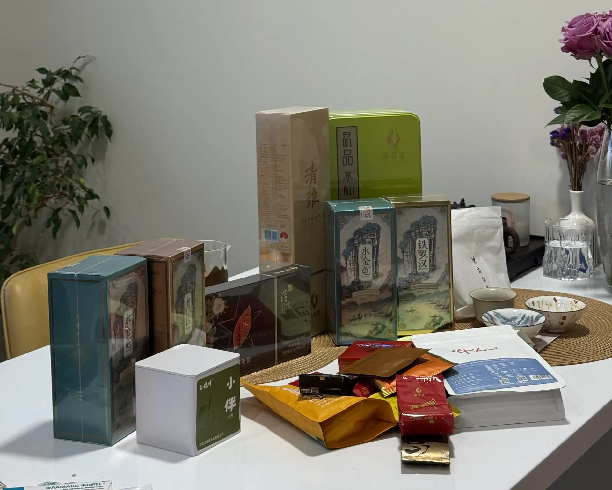

Опыт чайной церемонии: с чего я начинала
Как я от «молочного улуна» с Ozon дошла до настоящих церемоний в Пекине — и почему дома теперь миллион видов чая.
Как я от «молочного улуна» с Ozon дошла до настоящих церемоний в Пекине — и почему дома теперь миллион видов чая.
Я не помню, что заказала первым. Но могу посмотреть — Ozon хранит историю заказов, и где-то там до сих пор лежит мой чай шестилетней давности. Кажется, это был какой-то «молочный улун» в красивой упаковке. Или что-то с жасмином. Сейчас даже смешно.
Началось всё в 2020-м. Но если совсем честно — началось чуть раньше.
В конце 2019 года я начала учить китайский. Просто так, из интереса. И незаметно для себя увлеклась культурой — сначала языком, потом историей, потом всем этим ощущением «медленности», которое есть в китайских традициях. А особенно меня зацепила чайная культура. Не «чай» как напиток, а именно культура: как заваривают, как подают, что говорят, зачем вообще всё это.
А потом наступил 2020-й. Все сидели дома, все что-то искали — кто-то сходил с ума, кто-то начал вязать, а я решила увлечься чаем. Китайским чаем. И от избытка свободного времени меня затянуло по-настоящему.
Никакой системы не было. Просто набирала в поиске «улун», «пуэр», «зелёный чай» и выбирала то, что красиво выглядит (зато честно). Пробовала базовые вещи — ничего особенного, но затягивало. Помню это ощущение: сидишь дома, на улицу выходить нельзя, да и там ничего нового, а у тебя в чашке что-то новое, привлекательное, интересное.
Потом чай плавно перешёл в фон.

📷 Первый чай / упаковка / OzonДальше — не было системы. Пробовала в разных местах: где-то в ресторанах, где-то в гостях, где-то в кофейне, где неожиданно оказался приличный чай. Иногда покупала сама, иногда дарили. Кто-то привозил из Китая, кто-то дарил на работе.
Это был такой период «понемногу везде». Я уже понимала, что чай — это не только пакетик в кружке, но до серьёзного погружения было ещё далеко.
А вот это стало поворотным.
Мы были в Пекине и поехали на настоящую чайную церемонию. Не на постановку для галочки, а на нормальную: чабань, гайвань, пиала. Мы нюхали, вдыхали, пробовали, обсуждали температуры и время заварки, сливали, сравнивали. Чайный мастер рассказывала нам про сырьё, про то, откуда чай, как его собирали.
И вот там меня накрыло. Я набрала себе чая на год вперёд: улун с женьшенем, фруктовый, красный с личи, да хун пао, золотые брови. Остальные уже и не вспомню — но это было много. Очень много.
Тогда я впервые поняла разницу между «пить чай» и «пить чай».

📷 Пекин, чайная церемонияПосле Пекина прошло несколько месяцев, и в сентябре я купила всё. Гайвань, пиалы, чабань, чахэ, чайник. Начала читать — сначала статьи, потом книги. Накупила много книг, какие-то мне даже дарили. Заказывать чай из Китая. Интересоваться сырьём: где вырос, как обработан, какой урожай.
И пошли чайные. Сначала заходишь один раз, потом возвращаешься. Это отдельный мир, честно.
У нас даже есть традиция — куда бы мы ни поехали, мы идём в чайную в этом городе! И по возможности привозим с собой. Это наша фишка.
Сейчас у нас дома миллион видов чая. Мы пьём его просто — за завтраком, вечером, когда приходят гости. Проводим церемонии для себя, для семьи, для друзей. Кто-то сначала смотрит с недоумением, а потом просит вторую пиалу (как моя мама).
Мы ходим на Moscow Tea Expo. Общаемся с китайцами — уже не через переводчик в телефоне, а почти нормально (китайский + английский). Закупаем мини-партии: не «килограмм пуэра», а «давай возьмём по 50 граммов вот этого и вот этого». Полки ломятся, но остановиться невозможно.

📷 Наши полки с чаемУзнаем. Но, судя по тому, как всё развивается, скоро придётся покупать отдельный шкаф. Или снимать помещение. Или открывать чайный клуб. Кто знает.
А теперь — к делу.
Кстати, часть этих чаёв можно заказать. У нас есть чайный магазин — Tea Qi. Там то, что мы реально пьём дома: улуны, красные, пуэры и не только. Не «набор для начинающих с пакетиками», а нормальный чай, который мы сами выбирали, который мы сами пьём.
Если не знаешь, с чего начать — просто напиши, подскажу. Сама через это проходила.
Наш чайный магазин · 静心寻境